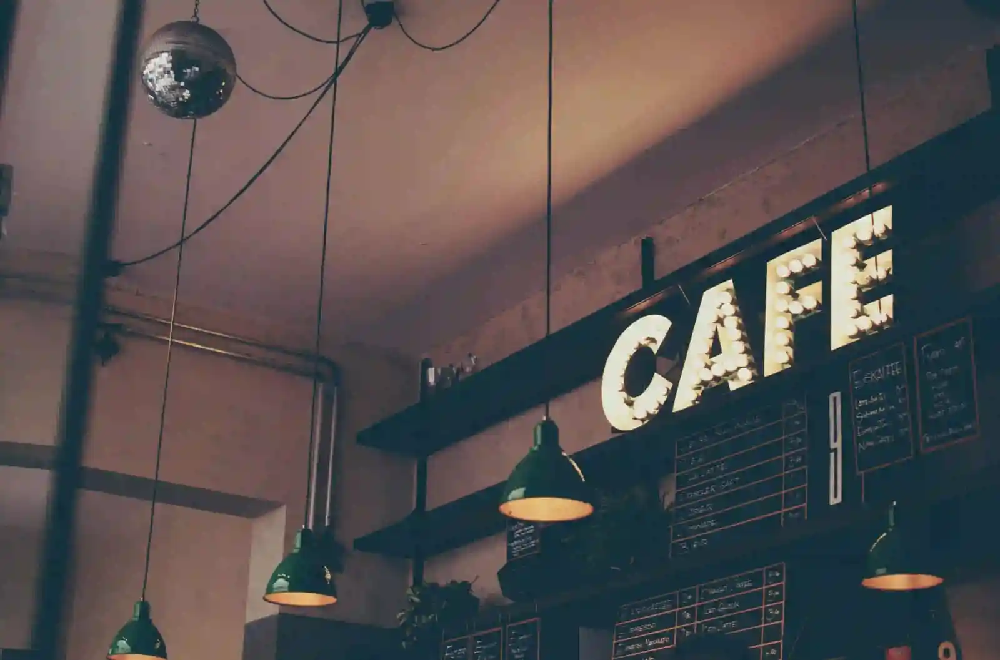
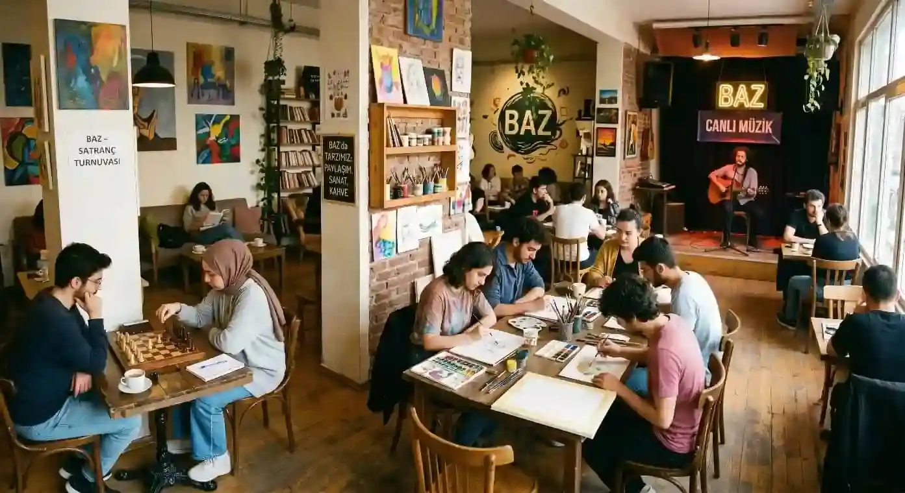
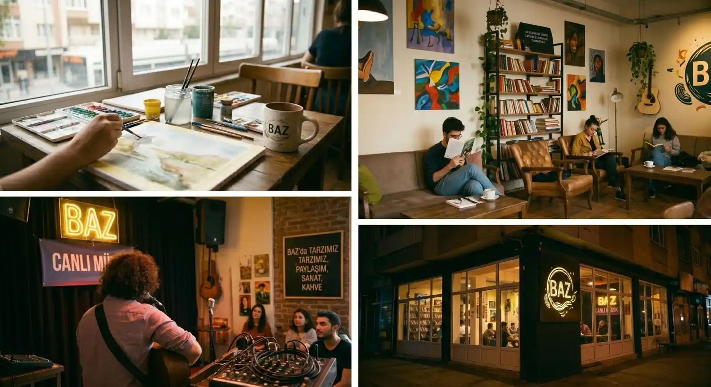

Zengin Kahve Seçkimiz
Taze çekirdeklerle hazırlanan lezzetli ve çok çeşitli kahve seçeneklerimiz damak zevkinize hitap etmek için sizleri bekliyor.
Huzur, Sanat ve Bir Yudum Kahve

Kampüsün tam kalbinde, zamanın sadece saatle değil, paylaşılan anlarla ölçüldüğü bir sığınak hayal ettik. Baz, sadece bir kafe değil; sabahın ilk ışıklarında kavrulan çekirdeklerin kokusuyla uyanan, kampüsün dinamizmini sanatın dinginliğiyle harmanlayan yaşayan bir organizmadır. Bizim için kahve, topraktan fincana uzanan eşsiz bir yolculuk olduğu kadar, sınırların kalktığı bir paylaşım kültürünün de ilk adımıdır.

Sınırların kalktığı bir paylaşım kültürü inşa ederek her fincanın yanına bir hikaye, her masaya bir ilham bırakmaktır. Bir köşede satranç turnuvasının sessiz heyecanı yaşanırken, diğerinde bir atölye çalışmasının yaratıcı enerjisi yükselir. Duvarlarımızdaki tablolardan sahnemizdeki tınılara kadar her detay, yaratıcılığınızı tetiklemek ve estetiği bir lüksten ziyade ruhu besleyen bir ihtiyaç haline getirmek için tasarlandı. Burada herkes aynı anda hem hayranlık dolu bir izleyici hem de üretken bir sanatçıdır.

Baz Kafe’de her fincan bir nota, her tatlı ise ruhunuza dokunan bir fırça darbesidir. Kampüsün dinamizmini sanatın dinginliğiyle buluşturan seçkimiz, sadece damak tadınıza değil, içsel huzurunuza da hitap eder. Kendi atölyemizde işlenen çekirdekler baristalarımızın ellerinde birer sanat eserine dönüşürken, her gün özenle hazırlanan taze tatlılarımız yeni anılarınıza eşlik eder. Burada menü sadece bir liste değil; her yudumun bir paylaşım kültürüne kapı araladığı sonsuz bir harmonidir.Bir yudum kahve, bir parça sanat ve bolca huzurla anın tadını çıkarmaya davetlisiniz.
Taze çekirdeklerle hazırlanan lezzetli ve çok çeşitli kahve seçeneklerimiz damak zevkinize hitap etmek için sizleri bekliyor.
Dünyanın en seçkin çiftliklerinden gelen %100 Arabica çekirdeklerini, haftalık kavurma periyotlarımızla her zaman taze tutuyor; bardağınıza en canlı aromaları taşıyoruz.
Her gün sizler için özenle yeniden hazırlanan birbirinden lezzetli tasarım tatlılarımız sizleri bekliyor.
Haftalık caz dinletilerimiz, akustik performanslarımız ve yerel sanatçıların katıldığı workshoplarla kampüsün kültürel nabzını tutuyoruz.
Kafemizin sakin atmosferiyle huzurlu okumalar yapabileceğiniz ve sizler için özenle hazırlanmış izole çalışma alanları ile kendinize vakit ayırabileceğiniz dakikalar vadediyoruz.
